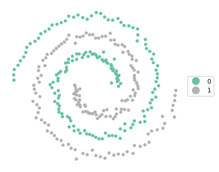

import numpy as np
import geopandas as gpd
from sklearn.cluster import KMeans, SpectralClustering
from sklearn.preprocessing import StandardScaler
from spatial_cluster_helper import ensure_datasets, cluster_stats, \
cluster_fit, cluster_map
import warnings
warnings.filterwarnings("ignore")10 Spectral Clustering
Spectral Clustering is a graph partitioning method that can be interpreted as simultaneously implementing dimension reduction with cluster identification. It is designed to identify potentially non-convex groupings in the multi-attribute space, something the cluster methods reviewed so far are not able to do. It has become one of the go-to methods in modern machine learning.
While a partitioning method like K-Means, spectral clustering is a totally different approach as it is aimed at discovering cluster shapes that are not convex. In machine learning, there are several famous such examples, such as the spirals data set (used in this Chapter) and the Swiss roll data set. Spectral clustering approaches the problem by reprojecting the observations onto a new set of axes, based on eigenvalues and eigenvectors (hence, spectral clustering). Mathematical details are provided in Chapter 8 of the GeoDa Cluster Book.
The method is implemented as the SpectralClustering class from sklearn.cluster. For comparison purposes, we also use KMeans from sklearn.cluster. As before, variable standardization is carried out by means of StandardScaler from sklearn.preprocessing. To load the data and summarize the results, we import the helper functions ensure_datasets, cluster_stats, cluster_fit and cluster_map from the spatial-cluster-helper package. Finally, as usual, we need numpy and geopandas. Optionally, we also rely on warnings to suppress some warning messages by means of filterwarnings.
To illustrate spectral clustering, we use the spirals point data set. Note that the spirals data have no projection, they are just points in two-dimensional space. We use them as a GeoDataFrame to facilitate visualization.
Required Packages
numpy, geopandas, warnings, sklearn.cluster, sklearn.preprocessing, spatial-cluster-helper
Required Data Sets
spirals
10.1 Preliminaries
10.1.1 Import Required Modules
10.1.2 Load Data
We read the 300 point coordinates from the spirals.shp shape file and do a quick check of the data set.
# Setting working folder:
#path = "/your/path/to/data/"
path = "./datasets/"
# Select the spirals data set:
shpfile = "spirals/spirals.shp"
# Load the data:
ensure_datasets(shpfile, folder_path = path)
dfs = gpd.read_file(path + shpfile)
print(dfs.shape)
dfs.head(3)(300, 4)| x | y | cl | geometry | |
|---|---|---|---|---|
| 0 | 0.812357 | -0.987127 | 1.0 | POINT (0.81236 -0.98713) |
| 1 | -0.267589 | -0.325520 | 1.0 | POINT (-0.26759 -0.32552) |
| 2 | 0.373975 | -0.012937 | 2.0 | POINT (0.37397 -0.01294) |
10.1.3 Spirals Plot
To illustrate the non-convex nature of the clusters, we use the cluster_map helper function for the variable cl, which contains the actual cluster membership.
cluster_map(dfs, dfs["cl"], figsize = (4,4), title = "", legend_fontsize=8)10.1.4 Standardization
As before, we compute the nn scaling factor to retain compatibility with the results in GeoDa.
n = dfs.shape[0]
nn = np.sqrt((n - 1.0)/n)10.1.5 Data Preparation
Finally, we specify the number of clusters as 2, create a subset with just the coordinates (data_cluster) and compute the scaled input array as X after applying the scaling factor to the result of StandardScaler().fit_transform.
n_clusters = 2
data_cluster = dfs[['x', 'y']]
X0 = StandardScaler().fit_transform(data_cluster)
X = X0 * nn10.2 K-Means Clustering of Spirals
Before tackling the spectral clustering, we illustrate the poor performance of K-Means on non-convex clusters like the spirals data. As covered in Chapter 8, we use the class KMeans from sklearn.cluster. As arguments, we pass the number of clusters (n_clusters = 2), k-means++ as the initialization method and a random_state for reproducibility.
We summarize the results with our usual helper functions cluster_stats, cluster_fit and cluster_map.
kmeans = KMeans(n_clusters = n_clusters, init = 'k-means++',
random_state = 123456789).fit(X)
cluster_labels = kmeans.labels_
c_stat = cluster_stats(cluster_labels)
clusfit = cluster_fit(data = data_cluster, clustlabels = cluster_labels,
correct = True, n_clusters = n_clusters) Labels Cardinality
0 151
1 149
Total Sum of Squares (TSS): 597.9999999999999
Within-cluster Sum of Squares (WSS) for each cluster: [183.227 180.93 ]
Total Within-cluster Sum of Squares (WSS): 364.157
Between-cluster Sum of Squares (BSS): 233.843
Ratio of BSS to TSS: 0.391cluster_map(dfs, cluster_labels, figsize = (4,4), title = "", legend_fontsize=8)The results reveal a fairly balanced cluster, but it completely misses the separation between the two spirals. The BSS/TSS ratio is pretty dismal as well.
10.3 Spectral Clustering
We now apply the spectral clustering method as SpectralClustering from sklearn.cluster (for details, see https://scikit-learn.org/stable/modules/generated/sklearn.cluster.SpectralClustering.html). Besides the usual number of clusters (n_clusters) and random_state, this also takes several other arguments to fine tune the approach.
An important argument is the affinity matrix, affinity, typically based on an adjacency matrix or kernel function. The default in SpectralClustering is to use a radial basis kernel function (rbf). A commonly used alternative is an affinity matrix based on k-nearest neighbors, which is also the approach taken here. This requires affinity = "nearest_neighbors" as well as the number of neighbors as n_neighbors. To replicate the results in Chapter 8 of the GeoDa Cluster Book, we use nearest_neighbors to construct the affinity matrix and start by setting n_neighbors = 3.
In addition to rbf and nearest_neighbors, several other options to construct the affinity matrix are available as well. This is not further considered here (see the detailed documentation).
Finally, n_init determines the number of times the K-Means stage of the analysis will be rerun with different starting points. The default is n_init = 10.
In the usual manner, we apply the fit method to the cluster instance. The main result are the cluster labels, again contained in the labels_ attribute. We apply our helper functions to summarize the results (if filterwarnings was not used, there will be a warning that can safely be ignored).
spectral = SpectralClustering(n_clusters = n_clusters,
random_state = 123456789,
affinity = 'nearest_neighbors',
n_neighbors = 3).fit(X)
cluster_labels = spectral.labels_
c_stat = cluster_stats(cluster_labels)
clusfit = cluster_fit(data = data_cluster,
clustlabels = cluster_labels,
correct = True, n_clusters = n_clusters) Labels Cardinality
0 183
1 117
Total Sum of Squares (TSS): 597.9999999999999
Within-cluster Sum of Squares (WSS) for each cluster: [489.101 102.65 ]
Total Within-cluster Sum of Squares (WSS): 591.751
Between-cluster Sum of Squares (BSS): 6.249
Ratio of BSS to TSS: 0.01cluster_map(dfs, cluster_labels, figsize = (4,4), title = "", legend_fontsize=8)The result is an unbalanced set of clusters that does better than K-Means at following the spirals, but is by no means satisfactory. The BSS/TSS ratio is also pretty dismal, but this is not surprising since it is the wrong criterion to assess a clustering of non-convex data.
We fine tune the approach by setting n_neighbors = 4 and summarize the result.
spectral = SpectralClustering(n_clusters = n_clusters,
random_state = 123456789,
affinity = 'nearest_neighbors',
n_neighbors = 4).fit(X)
cluster_labels = spectral.labels_
c_stat = cluster_stats(cluster_labels)
clusfit = cluster_fit(data = data_cluster, clustlabels = cluster_labels,
correct = True, n_clusters = n_clusters) Labels Cardinality
0 150
1 150
Total Sum of Squares (TSS): 597.9999999999999
Within-cluster Sum of Squares (WSS) for each cluster: [287.864 285.729]
Total Within-cluster Sum of Squares (WSS): 573.594
Between-cluster Sum of Squares (BSS): 24.406
Ratio of BSS to TSS: 0.041cluster_map(dfs, cluster_labels, figsize = (4,4), title = "", legend_fontsize=8)

These settings yield a perfectly balanced set of clusters that is able to identify the two spirals exactly.
In practice, it may take some experimenting to find a satisfactory solution. Also, one typically does not know beforehand whether the data is highly non-convex of not. Nevertheless, spectral clustering has become one of the most commonly used methods.
10.4 Practice
Spectral clustering is very sensitive to the various tuning parameters. The result of changes can be readily seen with the spectral example. In addition, spectral clustering could be applied to the Chicago census tract data as an alternative to K-Means or Hierarchical Clustering. Major discrepancies of the results might suggest the presence of non-convexity in the multi-attribute data distribution.